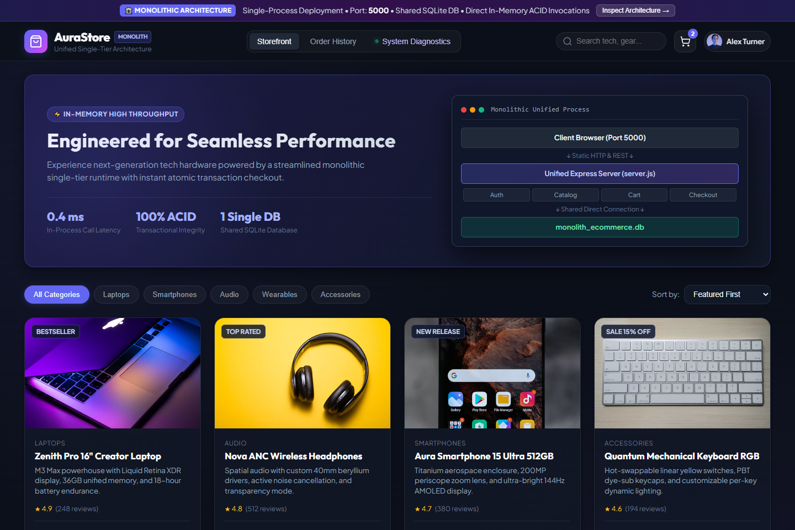
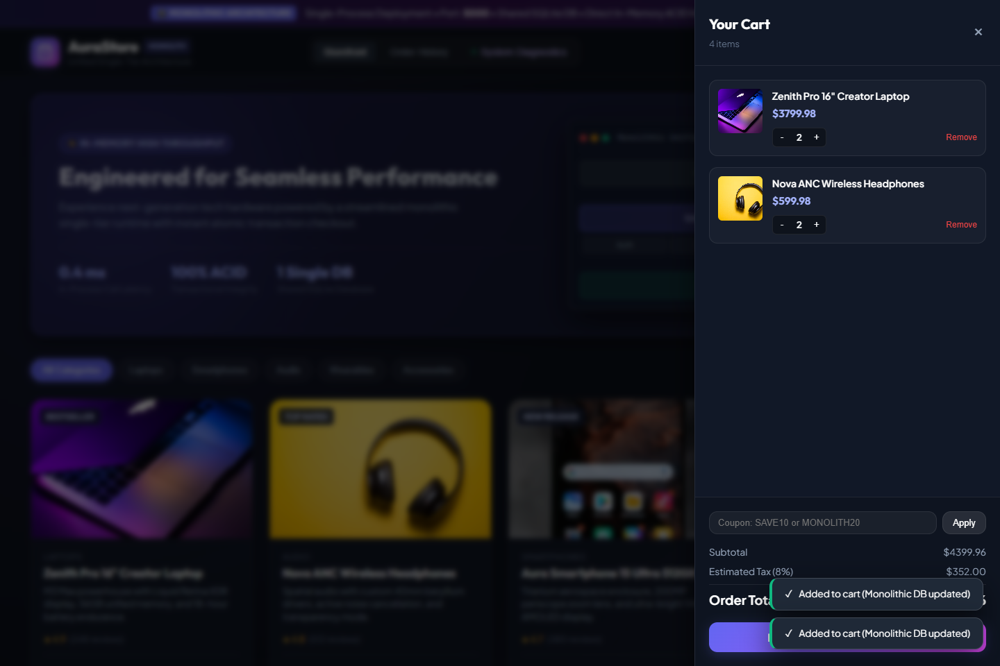
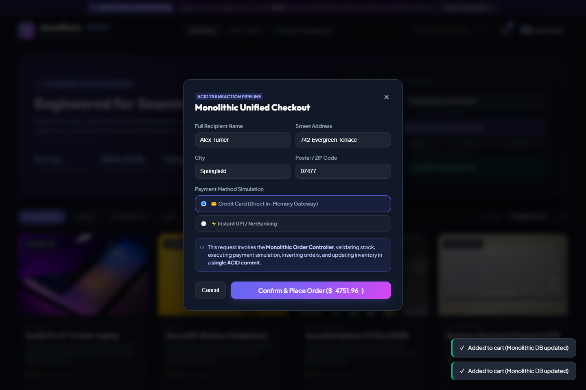
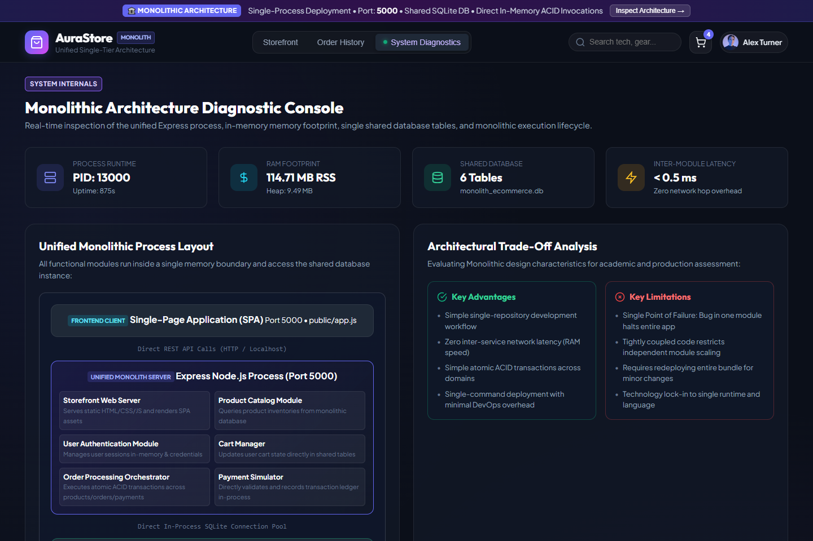
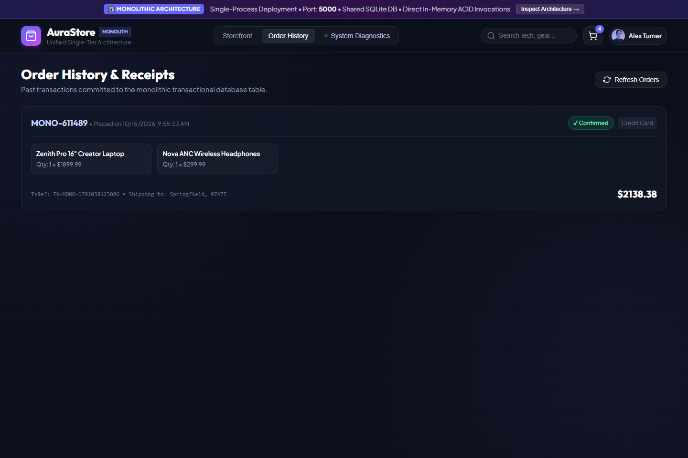
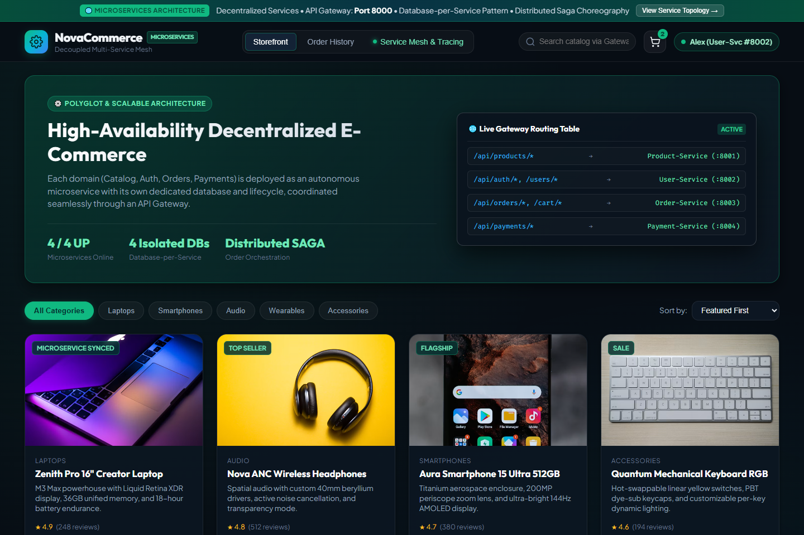
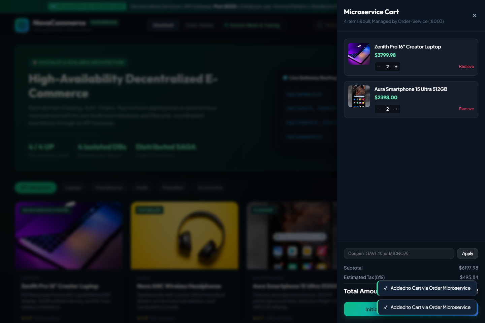
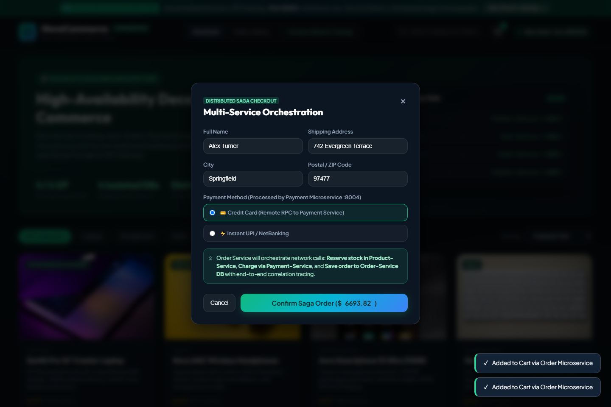
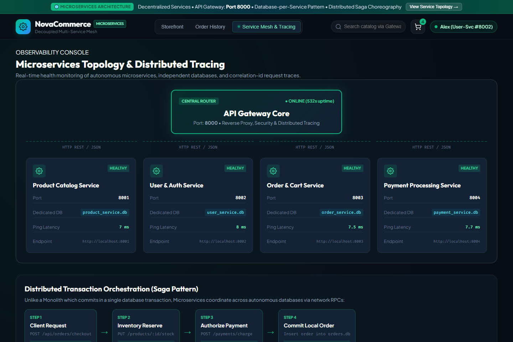
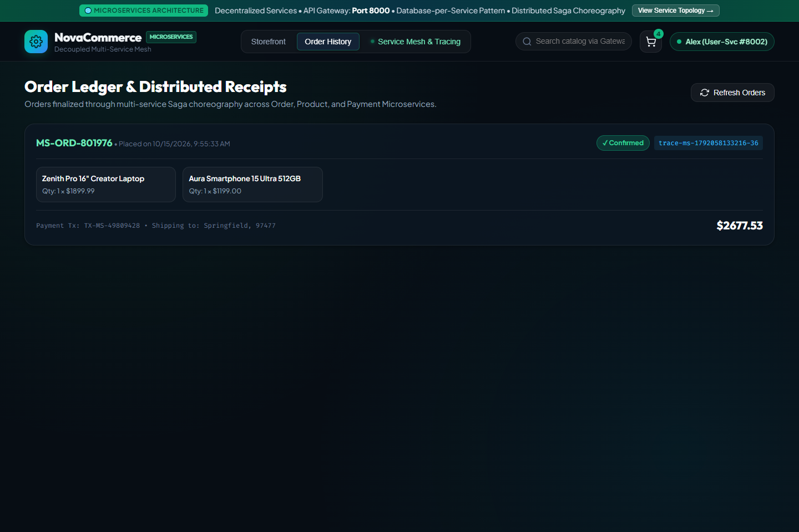

Comprehensive photographic inspection and comparative analysis between a Single-Tier Monolithic Application and a Decentralized Polyglot Microservices Mesh.


monolith_ecommerce.db without external network hops.




order_service.db, decoupling cart operations from catalog browse traffic.


trace-ms-...) and payment transaction authorization codes.| Architectural Dimension | 🏛️ Monolithic Architecture | 🌐 Microservices Architecture |
|---|---|---|
| Process Boundary | Single Process (Port 5000) | 5 Autonomous Processes (Ports 8000, 8001, 8002, 8003, 8004) |
| Database Strategy | Shared Single SQLite DB (monolith_ecommerce.db) | Database-per-Service (products.db, users.db, orders.db, payments.db) |
| Inter-Component Communication | Direct in-memory function calls (<0.5 ms) | Network HTTP/REST via API Gateway with Correlation IDs (3-8 ms) |
| Transaction Model | Strong ACID (BEGIN TRANSACTION ... COMMIT) | Eventual Consistency via Distributed Saga Orchestrator |
| Scalability | Vertical scaling or full-copy horizontal instances | Granular horizontal scaling per individual service load |
| Fault Tolerance & Blast Radius | High blast radius (Bug in Payment module can crash the app) | Fault isolation (Payment outage doesn't stop Catalog browsing) |
| Deployment Complexity | Simple single-command deployment | Requires orchestrator, API gateway, and distributed observability |